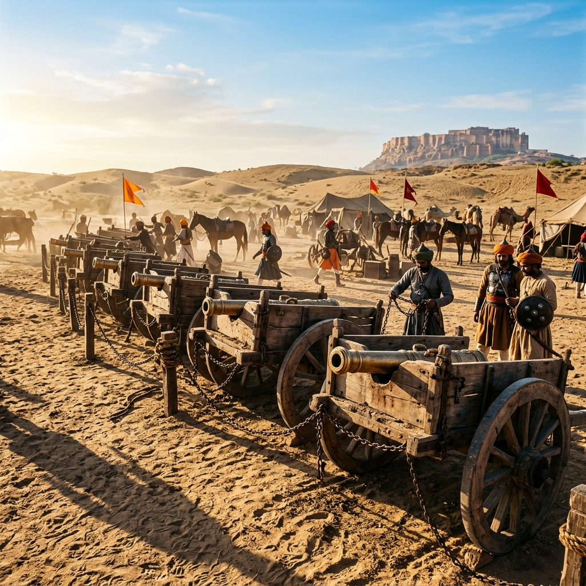
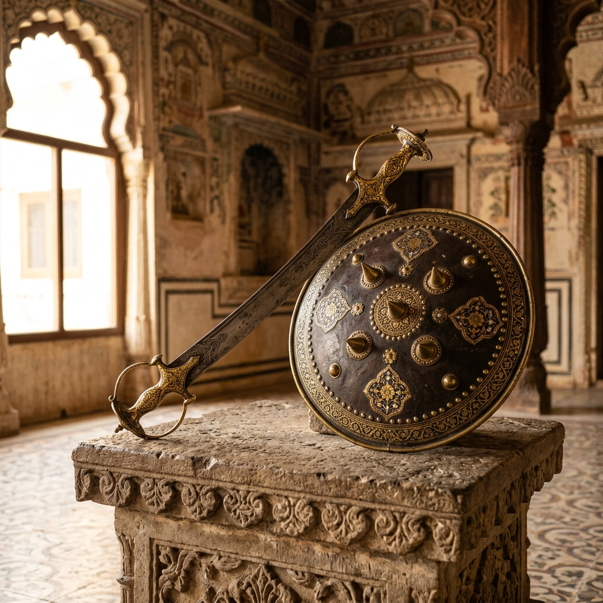
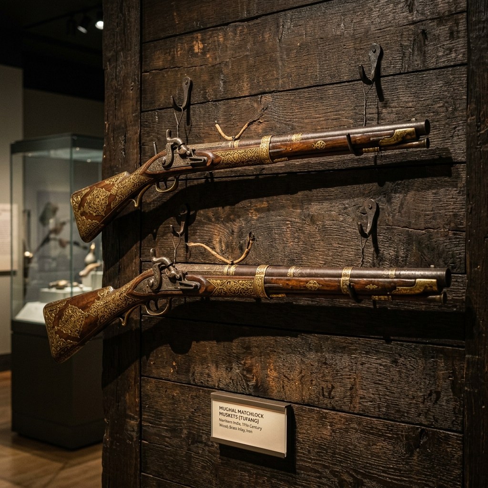

Battle of Khanwa Explorer
Step onto the historic plains of Bharatpur. Explore the decisive campaign where Babur's defensive gunpowder lines met Rana Sanga's Rajput confederacy, consolidating the foundation of the Mughal Empire in India.
The Struggle for Northern Indian Hegemony
Following his triumph at Panipat in 1526, Babur established his capital at Agra. However, his presence in India was heavily challenged by the Rajput confederacy led by Rana Sanga of Mewar, who viewed the Central Asian invader as a temporary threat. Sanga united various Rajput chieftains alongside Afghan factions led by Mahmud Lodi to expel the Mughals.
As Sanga advanced, Mughal patrols suffered early defeats at Bayana, severely damaging Mughal troop morale. In response, Babur gave an inspiring speech, renounced alcohol, broke his gold wine vessels, and rallied his men for a final battle at Khanwa in March 1527.
🏛️ At a Glance
- Combatants: Mughal Empire vs. Rajput Confederacy & Afghan Allies.
- Location: Khanwa, near Bharatpur, Rajasthan.
- Date: 16 March 1527 CE.
- Outcome: Decisive Mughal victory; Rajput alliance broken.
Commanders and Belligerents
The conflict brought together legendary rulers and vassal chiefs who defined early modern Indian history.
Babur
Founder of the Mughal Empire. A brilliant military commander who utilized Ottoman firearms, field fortifications, and horse archer flank maneuvers.
Rana Sanga
The veteran Sisodia Maharana of Mewar. He led the Rajput coalition, bringing together rulers of Marwar, Amber, Gwalior, and Chanderi.
Silhadi of Raisen
A powerful Rajput mercenary chief who commanded Mewar's vanguard division. His late-battle defection to Babur turned the tide of the battle.
📈 Tactical Elements
- The Araba (Cart Line): Hundreds of baggage carts chained together, serving as a defensive shield for musketeers.
- Arquebus Matchlocks: Babur's infantry fired matchlock muskets from behind wooden wheeled shields.
- Tulughma Maneuver: Fast, mobile horse archers flanked the Rajput lines from the wings.
- Defection: Chieftain Silhadi changed sides, weakening the Rajput center during the charge.
The Defensive Araba and the Flanking Tulughma
Rana Sanga relied on traditional Rajput warfare: massive cavalry charges and war elephants. To counter this, Babur recreated the defensive layout he used at Panipat. He lined up baggage carts chained together with rawhide, setting up wheeled wooden mantlets (shields) between them for matchlock arquebusiers.
When the Rajput charge commenced, they were met by heavy cannon fire and musketry. Babur's flanking horse archers then executed the *Tulughma* maneuver, charging Sanga's rear. The Rajput forces were surrounded, and Silhadi's defection sealed the Mughal victory.
Consolidation of Mughal Hegemony
How the victory at Khanwa secured Babur's empire and shifted the capital to Agra.
Agra as Imperial Center
Secured Delhi and Agra, shifting the Mughal empire's focus away from Kabul to the plains of northern India.
Shattered Confederacy
Rana Sanga survived the battle but died shortly after in 1528. The Rajput confederacy was broken, ending their bid for Delhi.
Artillery Revolution
Khanwa cemented the role of gunpowder artillery and matchlock muskets as the dominant technology in Indian warfare.
Chronology of the 1527 Campaign
Follow the campaign events that marked the rise of the Mughals.
Rajput Alliance
Rana Sanga unites the Rajputs of Amber, Marwar, Gwalior, and Lodi Afghan factions at Mewar.
Bayana Skirmish
Rajput vanguard defeats Babur's detachment. Babur takes a vow of temperance and rallies his troops.
The Battle of Khanwa
Armies clash near Bharatpur. Mughal musketry and the defection of Silhadi route the Rajput coalition.
Sanga's Death
Rana Sanga passes away in Chanderi, ending the organized Rajput confederacy of his era.
Relics of the Mewar-Mughal Conflict
Explore the weapons, armor, and battle plains that marked the 1527 clash.

Khanwa Battle Plains
The historic fields near Bharatpur where the armies clashed.

Rajput Weapons & Relics
The swords and shields of the Mewar confederacy forces.

Mughal Gunpowder Matchlocks
The musketry that gave Babur's forces their tactical advantage.
📚 References & Further Reading
- Babur, Zahir al-Din Muhammad (c. 1530). Baburnama (Memoirs of Babur).
- Begum, Gulbadan (c. 1587). Humayunnama (The History of Humayun).
- Chandra, Satish (2003). Medieval India: From Sultanat to the Mughals (Part Two). Har-Anand Publications.
- Sarda, Har Bilas (1918). Maharana Sanga: The Hindupat, the Life and Times of Sangram Singh. Vedic Yantralaya.